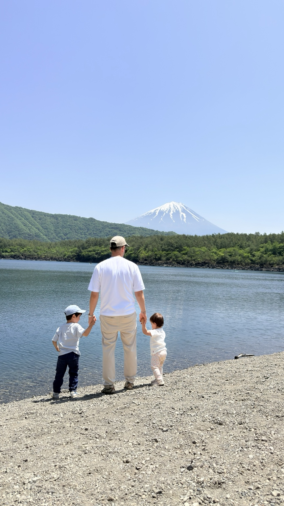
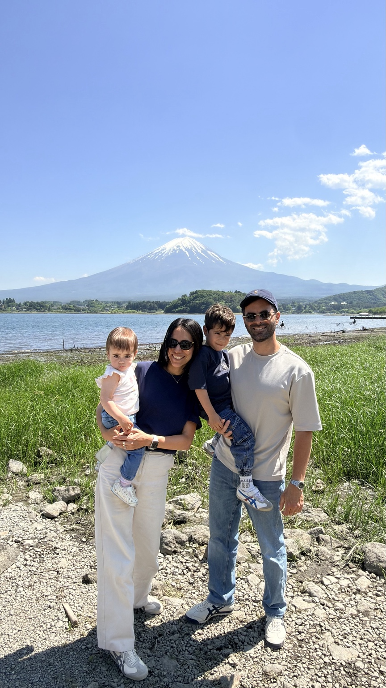
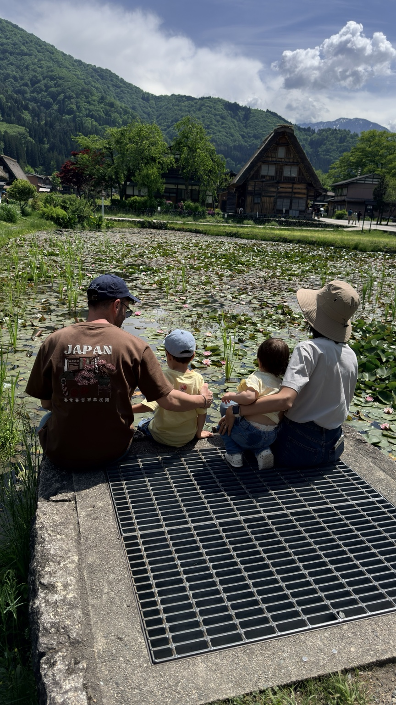
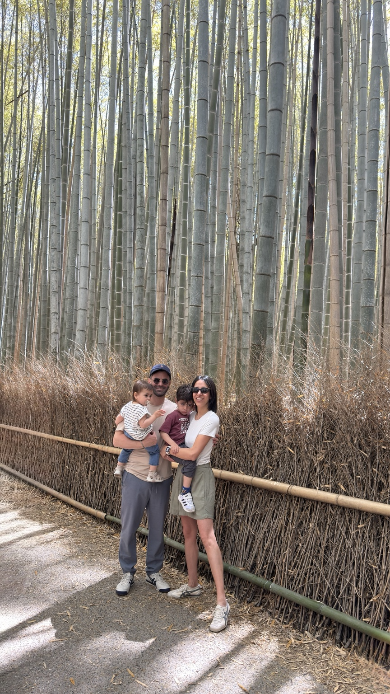
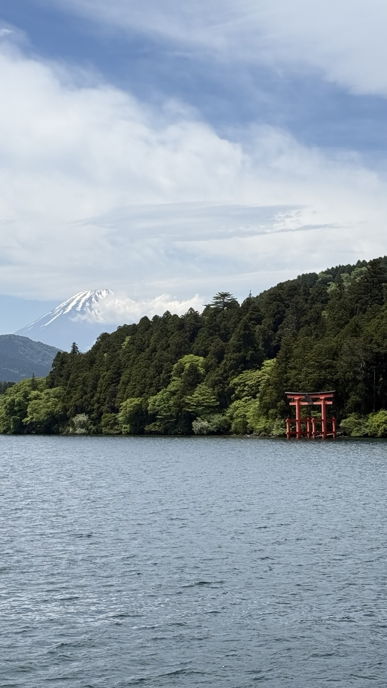

יפן
21 יום בין רחובות קיוטו, כפרי האלפים וטוקיו. איך חיברנו בין רכבות לרכב שכור, איפה ישנו ואיפה האטנו את הקצב.
למדריך יפןאנחנו אריאל וגל. אנחנו אוהבים לטייל עם ליאו ואמילי, ובדרך כלל חוזרים עם מאות תמונות ומפה מלאה בסימונים. כאן הפכנו את המסלולים שלנו למדריכים שאפשר לפתוח כבר כשמתחילים לחלום על היעד הבא.
למדריכי הטיולים

21 יום בין רחובות קיוטו, כפרי האלפים וטוקיו. איך חיברנו בין רכבות לרכב שכור, איפה ישנו ואיפה האטנו את הקצב.
למדריך יפן
עשרה לילות ברכב בין חוף אופטיה, אגמי פליטביצה והאלפים הסלובניים. שלושה בסיסי לינה, מסלולי הליכה ועצירות שבחרנו עם הילדים.
למדריך קרואטיה וסלובניהבקמיקוצ׳י הלכנו מאגם טאישו עד למסוף האוטובוסים. בפליטביצה בחרנו יום שמשלב הליכה ושיט. אלה בדיוק ההחלטות שאנחנו מחפשים כשמתכננים טיול עם הילדים: איפה להתחיל, איך חוזרים, ומה עוד ריאלי להספיק באותו יום.
במדריכים כתבנו איפה ישנו ומה עשינו בפועל. אפשר לאמץ מסלול שלם, או לפתוח רק את הפרק שמתאים ליום שלכם.




הדרכים, הלינות והתצפיות שבחרנו שימושיות גם לזוגות ולמטיילים עצמאיים. קחו את המקומות שמסקרנים אתכם, והשאירו זמן לעצירות משלכם.
חזרה למדריכים ↑